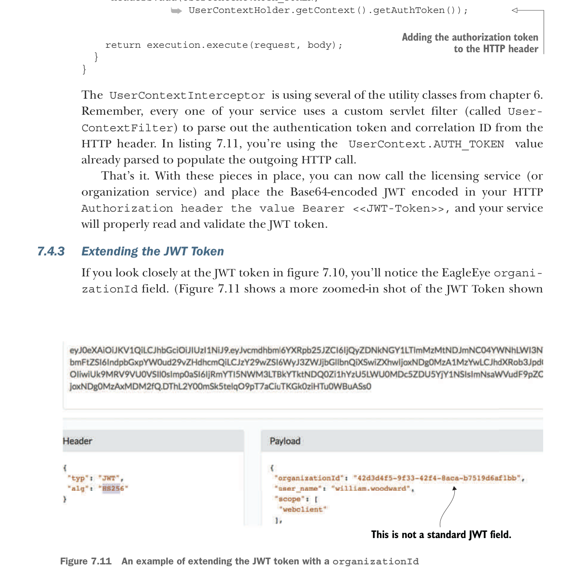

@Override
public ClientHttpResponse intercept(
HttpRequest request, byte[] body,
➥ ClientHttpRequestExecution execution)
throws IOException {
headers.add(UserContext.CORRELATION_ID,
➥ UserContextHolder.getContext().getCorrelationId());
headers.add(UserContext.AUTH_TOKEN,
➥ UserContextHolder.getContext().getAuthToken());
return execution.execute(request, body);
}
}Thêm token ủy quyền vào header HTTP
UserContextInterceptor đang dùng một số utility class từ chương 6. Hãy nhớ, mỗi dịch vụ của bạn đều dùng một servlet filter tùy chỉnh (gọi là UserContextFilter) để tách token xác thực và correlation ID từ header HTTP. Trong listing 7.11, bạn đang dùng giá trị UserContext.AUTH_TOKEN đã được parse sẵn để điền vào lời gọi HTTP đi ra.
Thế là xong. Với các phần này đã sẵn sàng, giờ bạn có thể gọi licensing service (hoặc organization service) và đặt JWT đã mã hóa Base64 vào header HTTP Authorization với giá trị Bearer <<JWT-Token>>, và dịch vụ của bạn sẽ đọc cũng như xác thực JWT token một cách chính xác.
7.4.3 Mở rộng JWT Token
Nếu bạn nhìn kỹ JWT token trong hình 7.10, bạn sẽ thấy trường EagleEye organizationId. (Hình 7.11 cho thấy cận cảnh phóng to hơn của JWT Token được hiển thị

Ví dụ mở rộng JWT token bằng organizationId